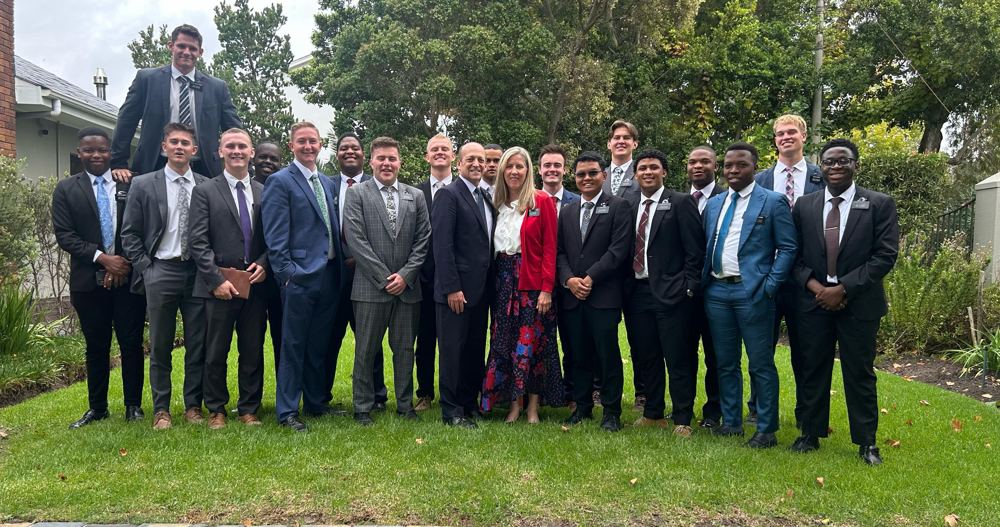

From 2023 to 2025, I served a full-time mission for The Church of Jesus Christ of Latter-day Saints in the South Africa Cape Town Mission. I taught primarily in English, but picked up some isiXhosa along the way — enough to greet people, build trust, and show that I cared about their language and culture, not just my message. Over two years I served in eight different areas across the Eastern and Western Cape, and had the chance to serve as a District Leader, Zone Leader, Assistant, and Trainer. It shaped how I set goals, work with other people, and solve problems — lessons I still lean on today.
Two years took me across two provinces and eight different areas:
A few photos from my time serving:

IsiXhosa is one of South Africa's official languages and is known for its click consonants. Here's a quick introduction to the language I got to learn a little of:
Rhino poaching is a serious conservation issue across parts of Southern Africa, including South Africa itself. Here's a live, interactive look at the data behind the crisis: